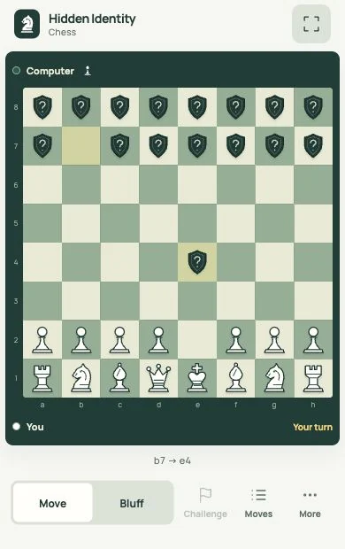

17 Oct 2026
The whole game, working
All three modes, private setup, bluffs, challenges, penalties, promotion, the pass-and-play cover and offline play. Seven review captures.

17 Oct 2026, same evening
Less on screen while playing
Zen mode on by default, a dock under the board, history and settings moved into sheets, a shorter setup. Seven review captures.

19 Oct 2026
Fixing the installed app on a Samsung phone
The home-screen app failed to open. I rebuilt how it loads offline, made every control bigger and put Play above the board. Eight review captures.